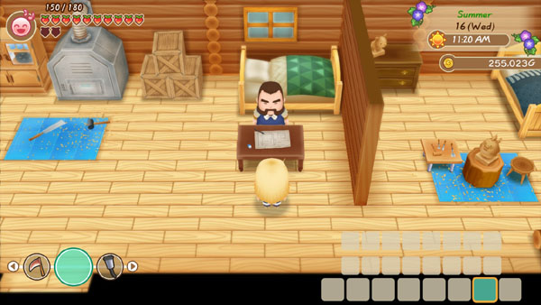

Taller de Gotts de la ciudad Mineral

Gotts es el carpintero local que vive en el bosque al sur de tu granja. Su tienda está abierta de 11:00 a 16:00 horas y cierra los sábados. Sin embargo, no vuelve a su tienda por la mañana hasta las 11:10 horas. Gotts deja su tienda desatendida entre las 13:00 y las 16:00 horas los jueves, viernes y domingos; básicamente, su horario de atención es solo de 11:10 a 13:00 horas esos días, ademas el taller de Gotts está abierto los días de festival.
Dentro del taller de Gotts puedes hacer dos cosas, la primera es comprar algunos productos y lo segundo es hacer renovaciones para tu granja.
| Horas | 11:00 am - 4:00 pm. |
|---|
| Cerrado | Sábados. |
|---|
| Dirigido por |
|
|---|
Productos
Productos
| Objeto | Disponibilidad | Costo |
|---|
| Madera | Comienzo del juego. | 50 G |
| Piedra | Comienzo del juego. | 50 G |
| Madera de oro | Tener 999 maderas en su gabinete. | 100.000 G |
| Árbol de manzana | Comienzo del juego. | 1.000 G |
| Árbol de uva | Comienzo del juego. | 1.000 G |
| Árbol de naranja | Comienzo del juego. | 1.000 G |
| Reloj | Comienzo del juego. | 2.000 G |
| Refrigerador | Construye la casa mediana. | 2.500 G |
| Refrigerador Grande | 3 días después de comprar el refrigerador. | 5.000 G |
| Refrigerador de Lujo | 3 días después de comprar el refrigerador Grande o estás casado. | 10.000 G |
| Gabinete grande | Comienzo del juego. | 5.000 G |
| Gabinete de lujo | Construye la Casa Grande o 3 días después de comprar el Gabinete Grande. | 10.000 G |
| Alfombra |
- Construye la Casa Grande o hazte con el Reloj.
- Consigue el refrigerador y los 8 utensilios de cocina.
|
5.000 G |
| Cama grande | Cuando construyas la casa grande. | 10.000 G |
| televisión LCD | Comienzo del juego. | 5.000 G |
Renovaciones
| Nombre | Disponibilidad | Requerimiento | Costo |
|---|
| Casa mediana | Comienzo del juego. |
|
3.000 G |
| Casa grande | Construye la casa mediana. |
|
10.000 G |
| Baño | Construye la casa grande. |
|
30.000 G |
| Mejora del tamaño del corral | Comienzo del juego. |
|
5.000 G |
| Mejora el molino | Despues de mejorar el gallinero. |
|
5.000 G |
| Mejora del tamaño del granero | Comienzo del juego. |
|
6.800 G |
| Mejora del tamaño del Silo | Comienzo del juego. |
|
6.800 G |
| Mejorar el nivel de campo a 2 | Primavera del año 2. | No requiere | 20.000 G |
| Mejorar el nivel de campo a 3 | Primavera del año 3 y nivel de campo en 2. | No requiere | 50.000 G |
| Mejorar el nivel de campo a 4 | Primavera del año 4 y nivel de campo en 3. | No requiere | 100.000 G |
| Mejorar el nivel de campo a 5 | Primavera del año 5 y nivel de campo en 4. | No requiere | 300.000 G |
| Villa de la ciudad | Ningún requerimiento especial |
|
10.000 G |
| Diseños de ventanas | Construye la casa mediana. |
|
25.000 G |
| Diseños de Buzónes | Construye la casa grande. |
|
10.000 G |
| Diseños de papel de tapices | Construye la casa grande. | No requiere | 1.000 G |
| Diseños de suelos | Construye la casa grande. | No requiere | 1.000 G |